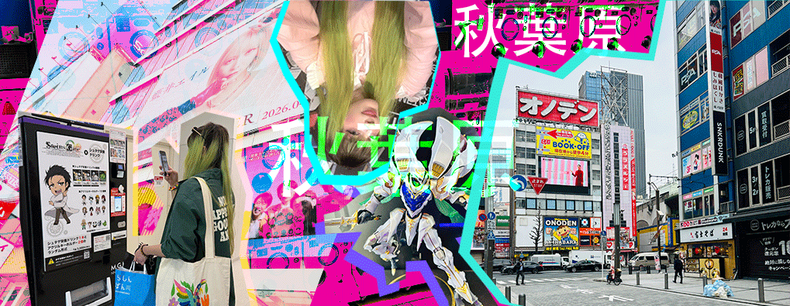
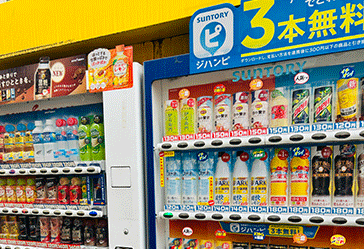
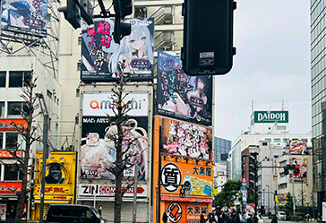
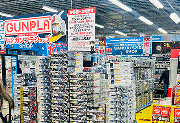
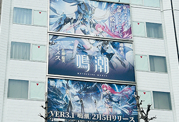

Akihabara: Mi Singularidad en el Centro del Multiverso

Cruzar el umbral de Akihabara por primera vez no fue simplemente un aterrizaje en una coordenada geográfica; fue una colisión de mundos. Para alguien que ha orbitado alrededor del anime desde que tiene memoria, caminar por la salida de la estación se sintió como si mi trayectoria personal finalmente se alineara con el núcleo de una galaxia brillante y ruidosa. Hospedarme allí fue habitar el epicentro de un fenómeno cósmico donde el tiempo y el espacio parecen doblarse bajo el peso de la cultura pop.


Estaciones Espaciales y Puertas al Tiempo
Mi primer encuentro con Radio Kaikan no fue solo una visita turística; fue una anomalía temporal. Al estar frente a su fachada, el aire se volvió denso, casi como si estuviera atrapada en un episodio de Steins;Gate. Esperaba ver, en cualquier momento, un satélite incrustado en la azotea o sentir el cambio de la "línea del mundo". Es un monolito dedicado a la imaginación que se eleva sobre las calles, recordándote que en este rincón de Tokio, la ficción y la realidad comparten la misma frecuencia.
Nebulosas de Plástico y Metal
Navegar por las calles de Akiba es como viajar a través de un cinturón de asteroides repleto de tesoros. Mis ojos buscaban constantemente señales de vida de mis universos favoritos: * Gundam * Ver las armaduras móviles y las cajas de modelismo apiladas como naves listas para el despegue me recordó por qué el UC (Universal Century) es mi hogar espiritual. * Wuthering Waves * Encontrar echoes de este mundo técnico y futurista entre tanto color y neón fue como hallar una señal clara en medio del ruido estelar. * Warhammer Tokyo * Entrar a este bastión fue encontrar un orden gótico en medio del caos tecnológico. Una parada obligatoria para quienes disfrutamos de la ingeniería de lo diminuto y lo épico.


El Sabor de Otros Mundos y el Orden Civilizatorio
Incluso las necesidades más mundanas se volvieron experiencias trascendentales. Don Quijote se reveló como un agujero de gusano donde puedes encontrar desde tecnología de punta hasta los snacks más extraños, todo bajo un caos perfectamente orquestado. Comer en Vie de France después de una larga jornada de exploración fue el combustible necesario para seguir mapeando este sector.
Lo que más resuena en mi memoria es la atmósfera de esta "civilización avanzada":
La Limpieza Radiante: Calles tan pulcras que parecen recién renderizadas en un motor de alta resolución.
La Cortesía Sistemática: Una educación que fluye con la precisión de una constante universal, haciendo que te sientas bienvenida en cada rincón.
La Tienda de Tamashii Nations: Un santuario a la perfección física de nuestras figuras favoritas, donde el coleccionismo alcanza el nivel de arte sagrado.
Akihabara no es solo un barrio; es un evento astronómico que ocurre una vez en la vida. Es el lugar donde los colores saturan el espectro visible y donde, por unos días, pude dejar de ser una observadora lejana para convertirme en parte integral de la constelación. Mi viaje a Japón comenzó aquí, en el corazón eléctrico del mundo, y mi órbita nunca volverá a ser la misma.
"La interfaz es el puente, pero el estilo es el destino."
Para los que están aprendiendo Hiragana o Katakana, la repetición visual es clave. Al igual que el código, cada trazo tiene una función y una historia.